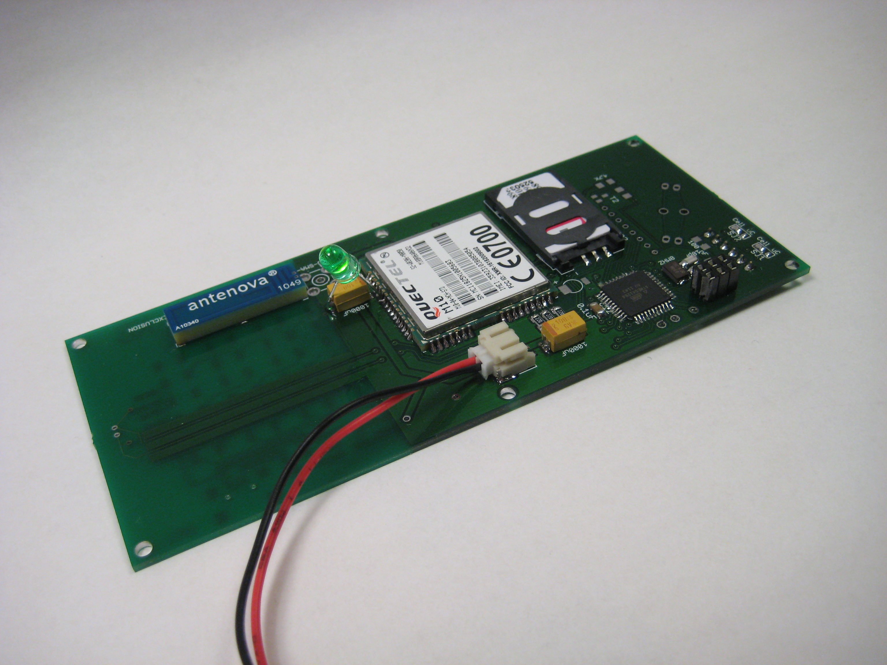

Here's a look at how government incentives drive where new fabs are built.
By Jo Constantz | April 13, 2021
A semiconductor shortage has forced Ford, GM, and other automakers to temporarily halt production at factories across the country. These disruptions have brought supply chains for semiconductors to the fore, with lawmakers and industry
leaders calling for increased
domestic production to ensure supply in times of crisis. Semiconductors are critical to much of our modern technology: Consumer devices (our iPhones, laptops, etc.), national
security (defense technology and advanced weapons systems), and the growing renewable energy sector (including electric
vehicles, wind and solar technologies). The demand in each of these sectors is expected to soar in the coming decades.
Part of what makes the semiconductor shortage so devastating for the auto industry is that semiconductors, unlike lower-tech manufactured parts like seatbelts and tires, require extremely sophisticated factories and equipment to
produce. The fabrication plants, or "fabs," are tremendously expensive to build and operate, so supply companies are not able to ramp up production to accomodate surges in demand. The total operating cost of a new fab can reach $20
billion,
including capital expenditure (upfront land, construction, and equipment) and the first ten years of operating expenses (labor, utilities, materials, taxes).
Compare the cost of building new fabs in the U.S. vs. China:
Each country offers different incentives and labor and utility costs.
Advanced Logic
Processors for cell phones, AI, and supercomputers
ct
U.S: $ billion
China: $ billion
Advanced Memory
Storage for cell phones, laptops, and data centers

ct
U.S.: $ billion
China: $ billion
Advanced Analog
Electronics for EVs, aircraft, and renewable energy
ct
U.S.: $ billion
China: $ billion
Total
U.S.: $ billion
China: $ billion
China and other East Asian countries (e.g., Taiwan and South Korea) heavily subsidize their semiconductor manufacturing industry. The U.S. does not. According to a report by the Semiconductor Industry Association and Boston Consulting
Group, government incentives
account for 40–70% of differences in total operating costs. Approximately 15–40% of the
difference in cost between the U.S. and other countries can be attributed to differences in expense of labor and utilities. Some countries further promote their domestic semiconductor industry by simplifying or expediting
procedures, easing regulations, providing convenient locations, and
building
supportive infrastructure around fab locations at no cost to the producer.
Notes: The data is sourced from "Government Incentives and US Competitiveness in Semiconductor Manufacturing," a report by the Semiconductor Industry Association and Boston Consulting Group published September
16, 2020.
Photo credits: Video courtesy of Intel, inc.; Images (in order of appearance) courtesy of Texas Advanced Computing Center, "New cellphone prototype" by David Mellis, and General Electric, Inc.